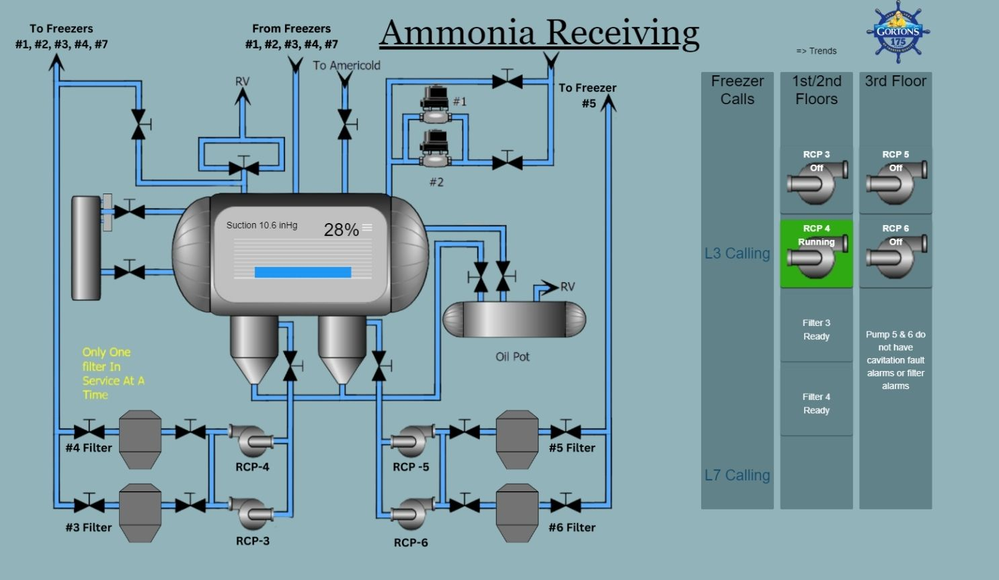

HMI Upgrades
Gortons underwent a software change for their HMIs and struggled to create clean, visual, easy to read HMIs. Learned how to use the new software, collaborated with full time engineers to see what they liked and disliked from previous HMIs. Created a consistent theme and layout for numerical views and created a pictoral view for specific facilities. New HMIs were created using Telit DeviceWise. This project was completed as a rising junior in 2024.


